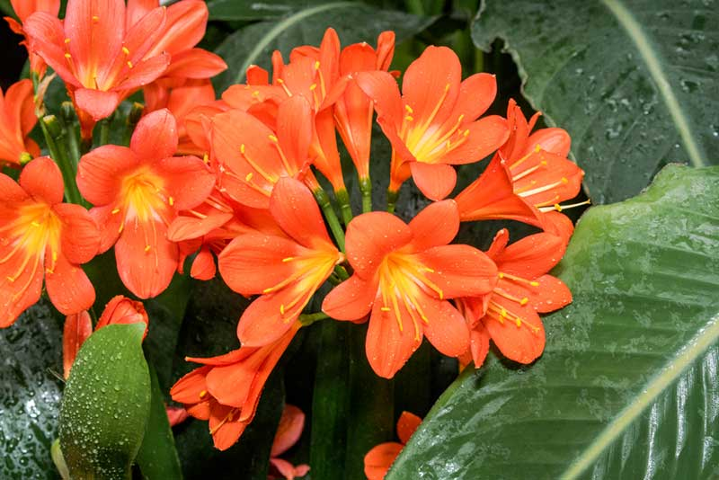
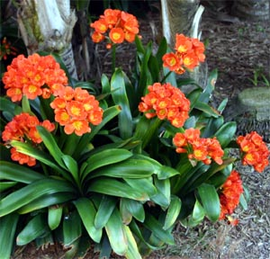

Common Name: Natal lily
Botanical Name: Clivia
Chinese Name: 君子兰

Clivia / Natal lily |

Clivia / Natal lily |

Clivia / Natal lily |
|
Other references
RHS
Gardenia
Gardeners' World
Natal lily, Clivia miniata, is a fantastic houseplant suitable for a range of indoor situations. It has dark green, strap-shaped leaves, and bears clusters of orange trumpet-shaped blooms with bright yellow anthers, from spring to late-summer.
Grow Clivia miniata in containers of houseplant compost in a well-lit situation but out of direct sunlight. Feed with a light, general fertiliser from when the flower buds emerge until it stops growing in autumn. Remove faded blooms as and when is necessary. In winter, move to a cool spot (around 10°C), and reduce watering (but don’t let it dry out completely). Move to a warmer room when the flower buds start to develop.
Clivia are frost tender and can be damaged by temperatures below 5°C (40°F). They should be grown as a houseplant, in a conservatory or warm greenhouse and do best in bright, filtered or indirect light. Avoid direct sun in summer, which may scorch the leaves, and place pots away from radiators or other sources of heat.
Pot up in well-drained, loam-based John Innes No 2 compost mixed with multi-purpose compost or additional leaf mould and grit, although any good potting medium should be satisfactory. Do not plant too deeply – the neck of the bulb should be above soil level.
For flowers to form, a cool period of 10°C (50°F) is needed from November to February. After this, water sparingly, applying a balanced fertiliser weekly until the flower buds form; then move to a well-lit position with a temperature of 16°C (60°F).
After flowering, remove spent flower stems near the base, unless seed is required, and reduce watering. Water sparingly through winter, but do not allow the containers to dry out.
Repotting, where necessary, can be carried out in early spring using a slightly larger container. Clivia flower best when well established in containers at least 20cm (8in) in diameter. Leave to grow on for several years undisturbed and top dress annually with fresh potting compost.
君子兰（学名：Clivia），别名剑叶石蒜，是石蒜科君子兰属的观赏花卉。原产于南非南部。中国常在温室盆栽供观赏。分株或种子繁殖。君子兰属植物有狭叶君子兰（细叶君子兰）、垂笑君子兰（花开时下垂似低头微笑，故称）。具茎君子兰（C．caulescens）（叶深绿色，花深橙红色）。加登君子兰（C．gardenii），在红色花朵的顶端具橙或黄的边，以及大叶君子兰（C. miniata）, 国内的大多是大叶君子兰。
君子兰是多年生草本，根肉质。基生叶革质，宽条形，排列整齐，呈扇形。叶基部呈两列紧密互抱成鳞茎状。春夏开花，花葶直立，小花有柄，漏斗状，颜色有橙黄、淡黄、橘红、浅红、深红等。未成熟葫果为绿色，成熟后为紫红色。种子大，球形。
1815年9月, 无畏的自然科学家威廉.布西尔（William Burchell）在南非的东开普省的巨鱼河源头处第一次科学性地收集了君子兰。 1820年前后，詹姆斯博维（James Bowie）在同样地点收集了一些君子兰并运到英国，1828年，约翰林德利（John Lindley）为纪念英国诺森伯兰郡的夏洛特·佛罗伦萨·克莱夫公爵夫人（Charlotte Florentine Clive），为之命名CLIVIA(君子兰)。
君子兰是中国吉林省长春市的市花。1932年，君子兰由日本传入中国长春，开始只在满洲国宫廷和御花园中栽培。1945年日本战败后，君子兰从宫廷流入民间栽培。
中国近年来培植了160多个名贵的君子兰品种，是百姓家庭常见的花卉品种。花期三到四月。性喜温湿及半阴环境，不耐寒，壤土要求排水良好，有分株与播种两种繁殖方法。分株于3-4月进行，生长期多施追肥，夏季炎热多雨，一般不施肥。君子兰花期长，叶常绿，最宜室内盆栽观赏。